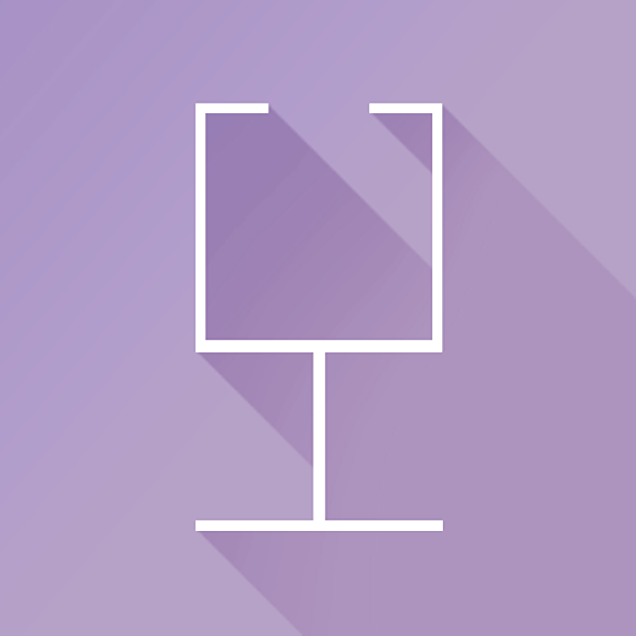

-

-
Öppna pubar
Info om pubarna som deltarKlubbmästerier som håller sina pubar öppna under Valborgspubrundan
BBQlubbmästeri
Tema: Gladiator (med Festeriet Arkitektur)
Lärosäte: Kungliga Tekniska Högskolan
Campus: Östermalm
Öppettider: 19:00 - 00:30
Facebookevent
CLubWästeriet
Tema: James Bond
Lärosäte: Kungliga Tekniska Högskolan
Campus: Östermalm
Öppettider: 19:00 - 00:30
Facebookevent
DISK KM
Tema: Shrek
Lärosäte: Stockholms Universitet
Campus: Kista
Öppettider: 12:00 - 17:00
Facebookevent
Datas Klubbmästeri - DKM
Tema: Spy Kids 3D
Lärosäte: Kungliga Tekniska Högskolan
Campus: Östermalm
Öppettider: 19:00 - 00:30
Facebookevent Festeriet Arkitektur (med BBQ)
Tema: Gladiator
Lärosäte: Kungliga Tekniska Högskolan
Campus: Östermalm
Öppettider: 19:00 - 00:30
Facebookevent
FisQlubbmästeri
Tema: Hitta Nemo
Lärosäte: Kungliga Tekniska Högskolan, Karolinska Institutet och Röda Korsets Högskola
Campus: Flemingsberg
Öppettider: 11:00 - 16:00
Facebookevent
Fysiks Klubbmästeri - FKM*
Tema: Star Wars Prequels
Lärosäte: Kungliga Tekniska Högskolan
Campus: Östermalm
Öppettider: 19:00 - 00:30
Facebookevent
Humanistiska Föreningens KM
Tema: Alice i Underlandet
Lärosäte: Stockholms Universitet
Campus: Frescati
Öppettider: 16:00 - 21:00
Facebookevent
Juridiska Föreningens KM
Tema: Daredevil
Lärosäte: Stockholms Universitet
Campus: Frescati
Öppettider: 16:00 - 21:00
Facebookevent
Kemis Klubbmästeri
Tema: Harry Potter
Lärosäte: Kungliga Tekniska Högskolan
Campus: Östermalm
Öppettider: 19:00 - 00:30
Facebookevent.png)
Klubbmästeriet Maskinsektionen
Tema: All Inclusive
Lärosäte: Kungliga Tekniska Högskolan
Campus: Östermalm
Öppettider: 19:00 - 00:30
Facebookevent
Kongliga Flygsektionens Klubbmästeri
Tema: Fast and Furious
Lärosäte: Kungliga Tekniska Högskolan
Campus: Östermalm
Öppettider: 19:00 - 00:30
Facebookevent.jpg)
Kungliga Bergssektionens Klubbmästeri
Tema: Mad Max (med Opens Klubbmästeri)
Lärosäte: Kungliga Tekniska Högskolan
Campus: Östermalm
Öppettider: 19:00 - 00:30
Facebookevent
Lärarstudenternas Klubbmästeri - LäS KM
Tema: The Great Gatsby
Lärosäte: Stockholms Universitet
Campus: Frescati
Öppettider: 16:00 - 21:00
Facebookevent
Naturvetenskapliga Föreningens Klubbmästeri - NF KM
Tema: Planet Earth (med SUS KM)
Lärosäte: Stockholms Universitet
Campus: Frescati
Öppettider: 16:00 - 21:00
FacebookeventOpens Klubbmästeri
Tema: Mad Max (med Kungliga Bergssektionens Klubbmästeri)
Lärosäte: Kungliga Tekniska Högskolan
Campus: Östermalm
Öppettider: 19:00 - 00:30
FacebookeventProgramRådet - PR (Elektro + Medicinsk Teknik)
Tema: Frozen
Lärosäte: Kungliga Tekniska Högskolan
Campus: Östermalm
Öppettider: 19:00 - 00:30
Facebookevent
Programutskottet Medicinska Föreningen - PrU MF
Tema: Scrubs
Lärosäte: Karolinska Institutet
Campus: Solna
Öppettider: 12:00 - 17:00
FacebookeventQMISK
Tema: TRON (tillsammans med TMEIT)
Lärosäte: Kungliga Tekniska Högskolan
Campus: Kista
Öppettider: 12:00 - 17:00
FacebookeventRosa Grisen S-sektionens Qlubbmästeri
Tema: Jokern
Lärosäte: Kungliga Tekniska Högskolan
Campus: Östermalm
Öppettider: 19:00 - 00:30
Facebookevent
SUS KM
Tema: Planet Earth (med NF KM)
Lärosäte: Stockholms Universitet
Campus: Frescati
Öppettider: 16:00 - 21:00
FacebookeventTelge Qlubbmästeri - Telge QM
Tema: Sagan om Ringen
Lärosäte: Kungliga Tekniska Högskolan
Campus: Södertälje
Öppettider: 11:00 - 15:00
FacebookeventTMEIT
Tema: TRON (tillsammans med QMISK)
Lärosäte: Kungliga Tekniska Högskolan
Campus: Kista
Öppettider: 12:00 - 17:00
Facebookevent -
Bussar
TEMABUSSAR MED VÄRDAR
TIDTABELL
Att åka vanlig buss överallt vore: Jättemeckigt
Därför har Valborgsfamiljen hyrt in bussar. Bussarna smyckas dessutom ut av våra fantastiska bussvärdar, och varje buss har sitt eget tema, precis som pubarna! Här kommer du hitta all info du behöver om bussarna.
Buss 1:
Sjöslagsgruppen: Didrik och Axel
Tema: Titanic
Buss 2:
Now you don’t: Pathe och C-F
Tema: Now you see me
Buss 3:
Madaladdinlab: Linnea och Linda
Tema: Aladdin
Buss 4:
Squvalp
Tema:
Specialbuss:
Promenadorquestern
Promenadorquestern och med Baletten Paletten är Tekniska Högskolans Studentkårs vid Kungliga Tekniska högskolan i Stockholm, officiella studentorkester.
Tema: Party bus to hell
HÅLLPLATSER
-
Sponsorer
Utan sponsorer - ingen Valborgspubrunda -
Familjen
Här är vi!Har du frågor eller vill du komma i kontakt med Familjen?
Du når oss på vår facebooksida: Valborgspubrundan

-
Valborgaren
Läs Valborgaren digitalt!